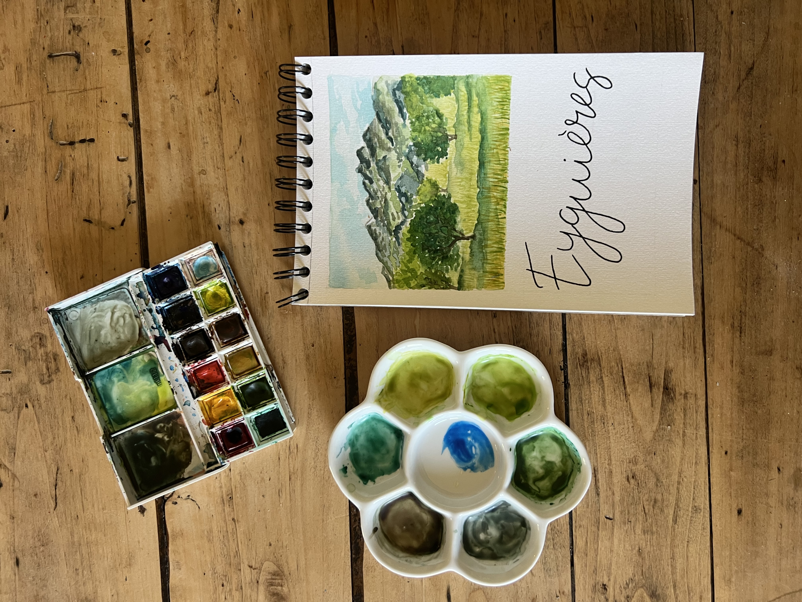

Aquarelle de mariage
J’ai créé une vingtaine de cartes peintes à l’aquarelle à l’occasion d’un mariage. Elles servaient de repères pour les centres de table. Les mariés ne voulaient pas utiliser de simples numéros, mais préféraient des noms de villes qui avaient une signification personnelle pour eux : des lieux liés à leurs origines, à leur rencontre ou à des moments importants de leur histoire. Chaque carte représentait donc une ville différente, avec une mise en page soignée et une illustration à l’aquarelle, pour apporter une touche personnalisée et esthétique à leur décoration de table.